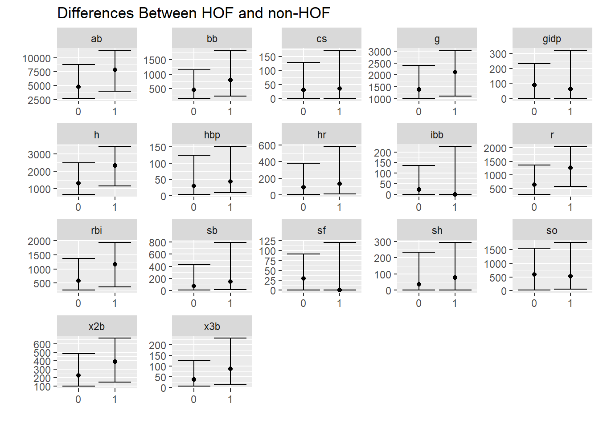
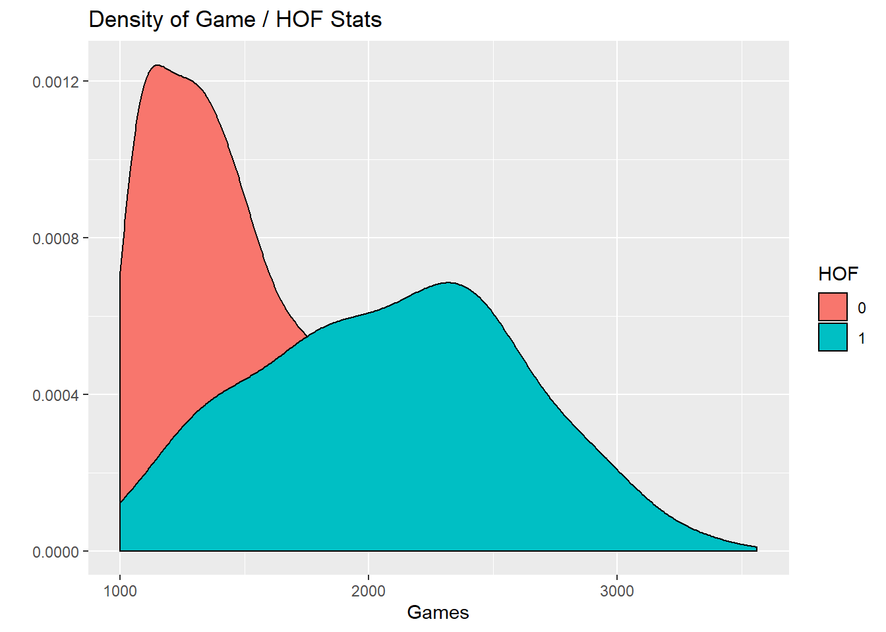
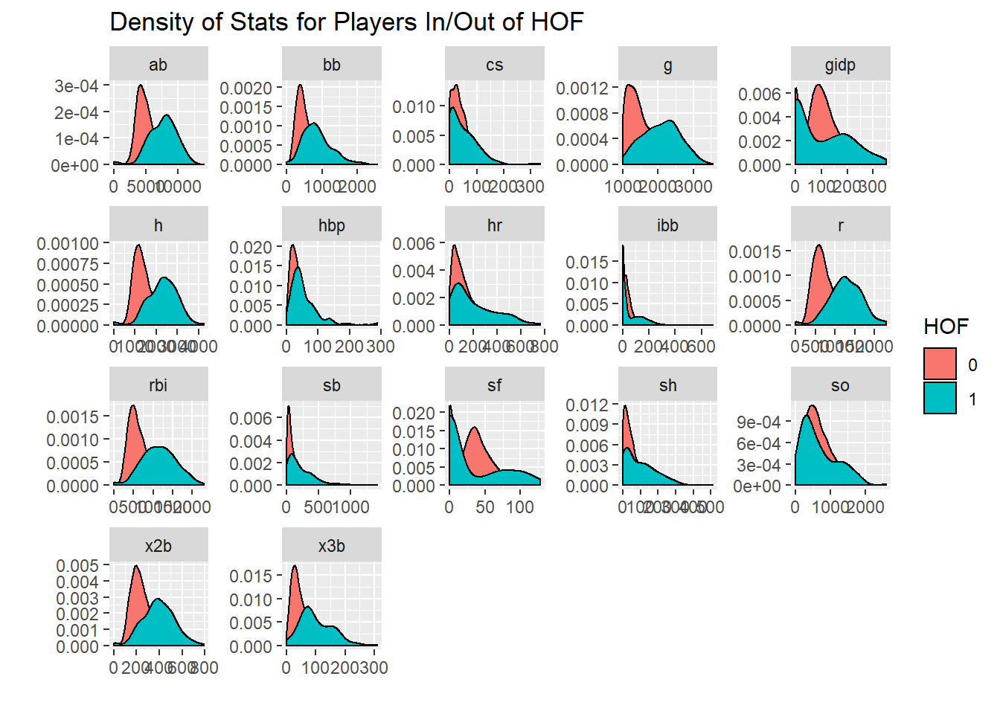
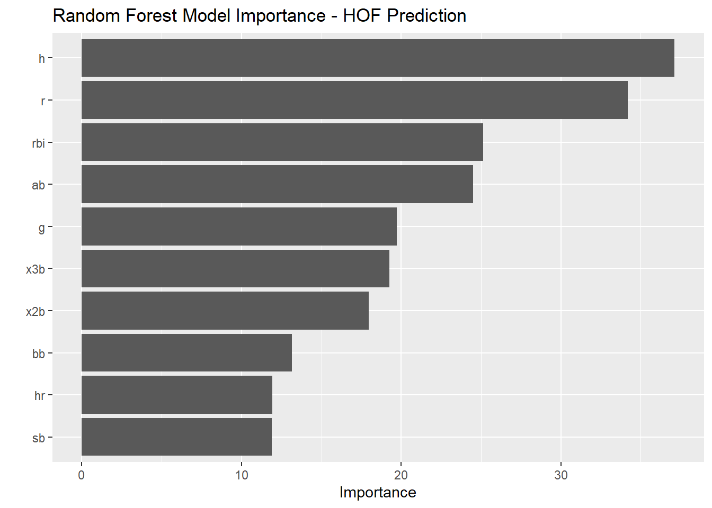

5 Data Modeling
In the last year or so, Max Kuhn, working for RStudio, has developed `tidymodels()’. Tidymodels is a modeling framework that follows tidy coding principles. It provides a streamlined technique for preprocessing data, executing a model, and validating the output.
In this section, you will learn:
- A small amount of data exploration.
- The basics of
tidymodels
- spliting data
- runing multiple models
- cross validation
- selective the best model
- How to parallelize your code
In this section, we will use the following libraries and data:
library(tidyverse)
library(tidymodels)
library(tune)
library(janitor)
library(doFuture)
library(vip)
data <- read_csv("data_sources/Batting.csv", col_types = cols(SF = col_double(), GIDP = col_double())) %>%
clean_names()
hofdata <- read_csv("data_sources/HallOfFame.csv") ## Parsed with column specification:
## cols(
## playerID = col_character(),
## yearid = col_double(),
## votedBy = col_character(),
## ballots = col_double(),
## needed = col_double(),
## votes = col_double(),
## inducted = col_character(),
## category = col_character(),
## needed_note = col_character()
## )## # A tibble: 6 x 22
## player_id year_id stint team_id lg_id g ab r h x2b x3b hr rbi sb cs bb so ibb hbp sh sf gidp
## <chr> <dbl> <dbl> <chr> <chr> <dbl> <dbl> <dbl> <dbl> <dbl> <dbl> <dbl> <dbl> <dbl> <dbl> <dbl> <dbl> <dbl> <dbl> <dbl> <dbl> <dbl>
## 1 abercda01 1871 1 TRO <NA> 1 4 0 0 0 0 0 0 0 0 0 0 NA NA NA NA NA
## 2 addybo01 1871 1 RC1 <NA> 25 118 30 32 6 0 0 13 8 1 4 0 NA NA NA NA NA
## 3 allisar01 1871 1 CL1 <NA> 29 137 28 40 4 5 0 19 3 1 2 5 NA NA NA NA NA
## 4 allisdo01 1871 1 WS3 <NA> 27 133 28 44 10 2 2 27 1 1 0 2 NA NA NA NA NA
## 5 ansonca01 1871 1 RC1 <NA> 25 120 29 39 11 3 0 16 6 2 2 1 NA NA NA NA NA
## 6 armstbo01 1871 1 FW1 <NA> 12 49 9 11 2 1 0 5 0 1 0 1 NA NA NA NA NA## # A tibble: 6 x 9
## playerID yearid votedBy ballots needed votes inducted category needed_note
## <chr> <dbl> <chr> <dbl> <dbl> <dbl> <chr> <chr> <chr>
## 1 cobbty01 1936 BBWAA 226 170 222 Y Player <NA>
## 2 ruthba01 1936 BBWAA 226 170 215 Y Player <NA>
## 3 wagneho01 1936 BBWAA 226 170 215 Y Player <NA>
## 4 mathech01 1936 BBWAA 226 170 205 Y Player <NA>
## 5 johnswa01 1936 BBWAA 226 170 189 Y Player <NA>
## 6 lajoina01 1936 BBWAA 226 170 146 N Player <NA>Lets try to develop an informed answer to the question: What baseball statistics are important for a baseball player making the Hall of Fame?
5.1 Prapare Data For Analysis
hofdata <-
hofdata %>%
clean_names() %>%
select(player_id, inducted) %>%
mutate(hof = ifelse(inducted=="Y",1,0)) %>%
filter(hof==1)
hofdata %>% count(inducted)## # A tibble: 1 x 2
## inducted n
## <chr> <int>
## 1 Y 317## `summarise()` ungrouping output (override with `.groups` argument)## # A tibble: 18,915 x 2
## player_id lastyear
## <chr> <dbl>
## 1 aardsda01 2015
## 2 aaronha01 1976
## 3 aaronto01 1971
## 4 aasedo01 1990
## 5 abadan01 2006
## 6 abadfe01 2016
## 7 abadijo01 1875
## 8 abbated01 1910
## 9 abbeybe01 1896
## 10 abbeych01 1897
## # ... with 18,905 more rowshof <-
data %>%
group_by(player_id) %>%
summarise_at(vars(g:gidp), list(~sum(.,na.rm = TRUE))) %>%
ungroup() %>%
left_join(retiredyear) %>%
left_join(hofdata) %>%
mutate(inducted = if_else(inducted=="Y",1,0)) %>%
mutate(inducted = replace_na(inducted, 0)) %>%
filter(g>=1000) %>%
mutate(inducted = as.factor(inducted)) %>%
select(-hof)## Joining, by = "player_id"## Joining, by = "player_id"## # A tibble: 1,565 x 20
## player_id g ab r h x2b x3b hr rbi sb cs bb so ibb hbp sh sf gidp lastyear inducted
## <chr> <dbl> <dbl> <dbl> <dbl> <dbl> <dbl> <dbl> <dbl> <dbl> <dbl> <dbl> <dbl> <dbl> <dbl> <dbl> <dbl> <dbl> <dbl> <fct>
## 1 aaronha01 3298 12364 2174 3771 624 98 755 2297 240 73 1402 1383 293 32 21 121 328 1976 1
## 2 abreubo01 2425 8480 1453 2470 574 59 288 1363 400 128 1476 1840 115 33 7 85 165 2014 0
## 3 adairje01 1165 4019 378 1022 163 19 57 366 29 29 208 499 31 17 41 30 149 1970 0
## 4 adamsbo03 1281 4019 591 1082 188 49 37 303 67 30 414 447 1 17 78 5 62 1959 0
## 5 adamssp01 1424 5557 844 1588 249 48 9 394 154 50 453 223 0 28 136 0 14 1934 0
## 6 adcocjo01 1959 6606 823 1832 295 35 336 1122 20 25 594 1059 55 17 52 35 223 1966 0
## 7 ageeto01 1129 3912 558 999 170 27 130 433 167 81 342 918 26 34 21 15 99 1973 0
## 8 ainsmed01 1078 3048 299 707 108 54 22 317 86 16 263 315 0 12 99 0 0 1924 0
## 9 alfoned01 1506 5385 777 1532 282 18 146 744 53 17 596 617 22 41 31 55 110 2006 0
## 10 alicelu01 1341 3971 551 1031 189 53 47 422 81 50 500 624 25 48 49 45 74 2002 0
## # ... with 1,555 more rowsFilter for HOF Eligable Players
## # A tibble: 2 x 2
## inducted n
## <fct> <int>
## 1 0 1229
## 2 1 168## # A tibble: 1,397 x 19
## player_id g ab r h x2b x3b hr rbi sb cs bb so ibb hbp sh sf gidp inducted
## <chr> <dbl> <dbl> <dbl> <dbl> <dbl> <dbl> <dbl> <dbl> <dbl> <dbl> <dbl> <dbl> <dbl> <dbl> <dbl> <dbl> <dbl> <fct>
## 1 aaronha01 3298 12364 2174 3771 624 98 755 2297 240 73 1402 1383 293 32 21 121 328 1
## 2 adairje01 1165 4019 378 1022 163 19 57 366 29 29 208 499 31 17 41 30 149 0
## 3 adamsbo03 1281 4019 591 1082 188 49 37 303 67 30 414 447 1 17 78 5 62 0
## 4 adamssp01 1424 5557 844 1588 249 48 9 394 154 50 453 223 0 28 136 0 14 0
## 5 adcocjo01 1959 6606 823 1832 295 35 336 1122 20 25 594 1059 55 17 52 35 223 0
## 6 ageeto01 1129 3912 558 999 170 27 130 433 167 81 342 918 26 34 21 15 99 0
## 7 ainsmed01 1078 3048 299 707 108 54 22 317 86 16 263 315 0 12 99 0 0 0
## 8 alfoned01 1506 5385 777 1532 282 18 146 744 53 17 596 617 22 41 31 55 110 0
## 9 alicelu01 1341 3971 551 1031 189 53 47 422 81 50 500 624 25 48 49 45 74 0
## 10 allenbe01 1139 3404 357 815 140 21 73 351 13 16 370 424 52 8 24 17 60 0
## # ... with 1,387 more rows## # A tibble: 168 x 18
## player_id g ab r h x2b x3b hr rbi sb cs bb so ibb hbp sh sf gidp
## <chr> <dbl> <dbl> <dbl> <dbl> <dbl> <dbl> <dbl> <dbl> <dbl> <dbl> <dbl> <dbl> <dbl> <dbl> <dbl> <dbl> <dbl>
## 1 abreubo01 2425 8480 1453 2470 574 59 288 1363 400 128 1476 1840 115 33 7 85 165
## 2 andruel01 1221 4625 648 1266 207 37 35 436 241 83 408 684 4 34 99 36 114
## 3 aybarer01 1346 4842 606 1324 241 45 51 451 144 58 257 613 16 48 72 37 102
## 4 barmecl01 1186 3805 434 932 208 17 89 415 43 30 216 734 32 60 60 26 54
## 5 bautijo02 1519 5139 878 1311 267 17 308 862 60 26 881 1113 53 66 23 50 152
## 6 bayja01 1278 4505 737 1200 240 30 222 754 95 17 636 1216 38 56 7 54 84
## 7 beltrad01 2720 10295 1428 2942 591 36 445 1571 119 42 775 1584 108 87 14 89 259
## 8 beltrca01 2457 9301 1522 2617 536 78 421 1536 312 49 1051 1693 101 48 18 104 194
## 9 berkmla01 1879 6491 1146 1905 422 30 366 1234 86 48 1201 1300 160 66 1 54 147
## 10 betanyu01 1156 4052 437 1057 218 29 80 457 30 30 143 435 10 10 34 39 110
## # ... with 158 more rows5.2 Data Exploration
Percentage of players in the dataset who are in the HOF
## # A tibble: 2 x 2
## inducted n
## <fct> <int>
## 1 0 1229
## 2 1 168Visual difference in statistics between HOF and non HOF
hof %>%
select(g:gidp, inducted) %>%
pivot_longer(cols = g:gidp) %>%
group_by(inducted,name) %>%
summarise(
lwr_quantile = quantile(value, c(.025)),
median = quantile(value, c(.5)),
upper_quantile = quantile(value, c(.975)),
) %>%
ggplot(aes(x=inducted,y=median)) +
geom_point() +
geom_errorbar(aes(ymin = lwr_quantile, ymax = upper_quantile)) +
theme(legend.position = "none") +
labs(x= "",y = "", title = "Differences Between HOF and non-HOF") +
facet_wrap(~name, scales = "free")## `summarise()` regrouping output by 'inducted' (override with `.groups` argument)
Well, won’t players who are in the HOF had played longer? Therefore they should have more hits, home runs, etc?
hof %>%
select(g, inducted) %>%
ggplot(aes(x=g, fill = inducted)) +
geom_density() +
labs(x="Games", y = "", fill = "HOF",
title = "Density of Game / HOF Stats")
Lets look at this for every statistic
hof %>%
select(g:gidp, inducted) %>%
pivot_longer(cols = g:gidp) %>%
ggplot(aes(x=value, fill = inducted)) +
geom_density() +
facet_wrap(~name, scales = "free") +
labs(x="",y = "", fill = "HOF",
title = "Density of Stats for Players In/Out of HOF")
5.3 Split Data test/train
set.seed(str_length("beatnavy"))
hof_initial_split <- initial_split(hofmod, prop = 0.80)
hof_initial_split## <1118/279/1397>5.4 Preprocess Data
A recipe is a description of what steps should be applied to a data set in order to get it ready for data analysis.
tidymodels / recipes currently offers about 30 ‘steps’. More documentation for the recipes package is here
preprocessing_recipe <-
recipe(inducted ~ ., data = training(hof_initial_split)) %>%
step_knnimpute(all_numeric()) %>%
step_center(all_numeric()) %>%
step_scale(all_numeric()) %>%
step_rm(player_id) %>%
prep()
preprocessing_recipe## Data Recipe
##
## Inputs:
##
## role #variables
## outcome 1
## predictor 18
##
## Training data contained 1118 data points and no missing data.
##
## Operations:
##
## K-nearest neighbor imputation for player_id, ab, r, h, x2b, x3b, hr, rbi, sb, cs, bb, so, ibb, hbp, sh, sf, gidp, g [trained]
## Centering for g, ab, r, h, x2b, x3b, hr, rbi, sb, cs, bb, so, ibb, hbp, sh, sf, gidp [trained]
## Scaling for g, ab, r, h, x2b, x3b, hr, rbi, sb, cs, bb, so, ibb, hbp, sh, sf, gidp [trained]
## Variables removed player_id [trained]5.5 Apply Preprocessing
For a recipe with at least one preprocessing operations that has been trained by recipe(), apply the computations to the data.
hof_training_preprocessed_tbl <-
preprocessing_recipe %>%
bake(training(hof_initial_split))
hof_training_preprocessed_tbl## # A tibble: 1,118 x 18
## g ab r h x2b x3b hr rbi sb cs bb so ibb hbp sh sf gidp inducted
## <dbl> <dbl> <dbl> <dbl> <dbl> <dbl> <dbl> <dbl> <dbl> <dbl> <dbl> <dbl> <dbl> <dbl> <dbl> <dbl> <dbl> <fct>
## 1 3.88 3.67 3.86 3.80 3.24 1.09 5.38 4.45 0.776 0.819 2.80 1.92 5.50 -0.187 -0.682 3.20 3.43 1
## 2 -0.870 -0.700 -1.07 -0.769 -0.794 -0.862 -0.551 -0.923 -0.696 -0.314 -1.10 -0.300 -0.0505 -0.624 -0.384 0.0560 0.892 0
## 3 -0.611 -0.700 -0.488 -0.669 -0.576 -0.121 -0.721 -1.10 -0.431 -0.288 -0.425 -0.431 -0.686 -0.624 0.169 -0.809 -0.342 0
## 4 -0.293 0.105 0.208 0.172 -0.0415 -0.146 -0.959 -0.845 0.176 0.226 -0.298 -0.994 -0.708 -0.304 1.03 -0.982 -1.02 0
## 5 0.899 0.655 0.150 0.578 0.361 -0.467 1.82 1.18 -0.759 -0.417 0.163 1.11 0.458 -0.624 -0.219 0.229 1.94 0
## 6 -0.950 -0.756 -0.579 -0.807 -0.733 -0.665 0.0686 -0.737 0.266 1.02 -0.660 0.754 -0.157 -0.129 -0.682 -0.463 0.183 0
## 7 -1.06 -1.21 -1.29 -1.29 -1.28 0.00236 -0.849 -1.06 -0.298 -0.649 -0.918 -0.763 -0.708 -0.769 0.482 -0.982 -1.22 0
## 8 -0.110 0.0153 0.0234 0.0790 0.247 -0.887 0.205 0.128 -0.529 -0.623 0.169 -0.00326 -0.241 0.0746 -0.533 0.921 0.339 0
## 9 -0.478 -0.725 -0.598 -0.754 -0.567 -0.0223 -0.636 -0.767 -0.333 0.226 -0.144 0.0144 -0.178 0.278 -0.264 0.575 -0.172 0
## 10 -0.928 -1.02 -1.13 -1.11 -0.996 -0.813 -0.416 -0.965 -0.808 -0.649 -0.569 -0.489 0.395 -0.886 -0.638 -0.394 -0.371 0
## # ... with 1,108 more rows5.6 Prepare Cross Validation
This partitions our data into v folds. In our case, 5.
This yields a data frame with a nested list of training / testing data.
set.seed(str_length("beatnavy"))
hof_cv_folds <-
training(hof_initial_split) %>%
bake(preprocessing_recipe, new_data = .) %>%
vfold_cv(v = 5)
hof_cv_folds## # 5-fold cross-validation
## # A tibble: 5 x 2
## splits id
## <named list> <chr>
## 1 <split [894/224]> Fold1
## 2 <split [894/224]> Fold2
## 3 <split [894/224]> Fold3
## 4 <split [895/223]> Fold4
## 5 <split [895/223]> Fold55.7 Specify Models
Now that we’ve prepared our data, we must specifiy the models which want to compare. We’ll look at 2.
You must first specify the model type (logistic_reg() and rand_forest in the examples below.) There are many to choose from in the parsnip package. Documentation can be found here.
The motivation behind this package from the documentation, "Modeling functions across different R packages can have very different interfaces. If you would like to try different approaches, there is a lot of syntactical minutiae to remember. The problem worsens when you move in-between platforms.
“parsnip tries to solve this by providing similar interfaces to models. For example, if you are fitting a random forest model and would like to adjust the number of trees in the forest there are different argument names to remember depending on the random forest package you chose…” (such as rf or randomforest).
After you specify the model type, you can provide
GLM Model
glmnet_model <-
logistic_reg(mode = "classification",
penalty = tune(),
mixture = tune()) %>%
set_engine("glmnet")
glmnet_model## Logistic Regression Model Specification (classification)
##
## Main Arguments:
## penalty = tune()
## mixture = tune()
##
## Computational engine: glmnetRandom Forest Model
Notice how in the previous model and in this model, I did not speciy the parameters such as penalty, mixture, mode, mtry, trees, and min_n. I can specivy these values, but I have chose to ‘tune’ them through cross validation in later steps.
forest_model <-
rand_forest(
mode = "classification",
mtry = tune(),
trees = tune(),
min_n = tune()
) %>%
set_engine("randomForest", objective = "reg:squarederror")
forest_model## Random Forest Model Specification (classification)
##
## Main Arguments:
## mtry = tune()
## trees = tune()
## min_n = tune()
##
## Engine-Specific Arguments:
## objective = reg:squarederror
##
## Computational engine: randomForest5.8 Create Grid of Parameters to Validate Over
Here we specify the tuning parameters for cross validation and take a look visually at the parameter space we are covering in efforts to reach the best model.
GLM Model
## Collection of 2 parameters for tuning
##
## id parameter type object class
## penalty penalty nparam[+]
## mixture mixture nparam[+]set.seed(str_length("beatnavy"))
glmnet_grid = grid_max_entropy(glmnet_params, size = 20)
glmnet_grid## # A tibble: 20 x 2
## penalty mixture
## <dbl> <dbl>
## 1 6.31e- 9 0.558
## 2 3.73e- 4 0.368
## 3 2.05e- 9 0.805
## 4 1.71e-10 0.0903
## 5 6.00e- 1 0.620
## 6 2.15e- 8 0.195
## 7 1.72e- 2 0.850
## 8 1.78e-10 0.317
## 9 8.94e- 4 0.947
## 10 5.45e- 7 0.809
## 11 3.69e- 5 0.0202
## 12 3.71e- 2 0.0778
## 13 3.01e- 7 0.993
## 14 2.49e- 4 0.703
## 15 2.49e- 8 0.0277
## 16 9.08e- 7 0.532
## 17 3.13e- 1 0.344
## 18 3.80e-10 0.671
## 19 6.00e- 7 0.294
## 20 4.37e- 4 0.176glmnet_grid %>%
ggplot(aes(penalty, mixture)) +
geom_point(size = 3) +
scale_x_log10() +
labs(title = "Max Entropy Grid", x = "Penalty (log scale)", y = "Mixture")
Random Forest Model
## Collection of 3 parameters for tuning
##
## id parameter type object class
## mtry mtry nparam[+]
## trees trees nparam[+]
## min_n min_n nparam[+]set.seed(str_length("beatnavy"))
forest_grid <- grid_max_entropy(forest_params, size = 30)
forest_grid## # A tibble: 30 x 3
## mtry trees min_n
## <int> <int> <int>
## 1 3 1714 5
## 2 4 368 28
## 3 3 1607 39
## 4 3 1207 14
## 5 5 42 37
## 6 4 892 27
## 7 3 1154 25
## 8 5 1678 2
## 9 4 607 10
## 10 3 803 37
## # ... with 20 more rows5.9 Execute Cross Validation
5.9.1 Parallel Processing
The great thing about cross validation is that it helps tune our parameters in efforts to find the model that performs the best on the out of sample test set. The problem is that it can be compuationally intensive.
Thankfully tidymodels is capable of running over multiple cores. You can see from the code below my computer has 4 cores. Your milage may vary.
GLM Model
The code below kicks off the cross validation of your model. You can see the time it took to run the code below.
tictoc::tic()
glmnet_stage_1_cv_results_tbl <- tune_grid(
object = glmnet_model,
inducted ~ .,
resamples = hof_cv_folds,
grid = glmnet_grid,
# grid = forest_grid,
metrics = metric_set(accuracy, kap, roc_auc),
control = control_grid(verbose = TRUE)
)
tictoc::toc()## 26.06 sec elapsed## # 5-fold cross-validation
## # A tibble: 5 x 4
## splits id .metrics .notes
## * <named list> <chr> <list> <list>
## 1 <split [894/224]> Fold1 <tibble [60 x 5]> <tibble [0 x 1]>
## 2 <split [894/224]> Fold2 <tibble [60 x 5]> <tibble [0 x 1]>
## 3 <split [894/224]> Fold3 <tibble [60 x 5]> <tibble [0 x 1]>
## 4 <split [895/223]> Fold4 <tibble [60 x 5]> <tibble [0 x 1]>
## 5 <split [895/223]> Fold5 <tibble [60 x 5]> <tibble [0 x 1]>## # A tibble: 10 x 7
## penalty mixture .metric .estimator mean n std_err
## <dbl> <dbl> <chr> <chr> <dbl> <int> <dbl>
## 1 3.69e- 5 0.0202 accuracy binary 0.913 5 0.0106
## 2 3.01e- 7 0.993 accuracy binary 0.912 5 0.00757
## 3 1.72e- 2 0.850 accuracy binary 0.911 5 0.0120
## 4 2.49e- 4 0.703 accuracy binary 0.911 5 0.00780
## 5 8.94e- 4 0.947 accuracy binary 0.911 5 0.00964
## 6 3.73e- 4 0.368 accuracy binary 0.911 5 0.00866
## 7 6.00e- 7 0.294 accuracy binary 0.911 5 0.00685
## 8 2.49e- 8 0.0277 accuracy binary 0.911 5 0.00895
## 9 4.37e- 4 0.176 accuracy binary 0.911 5 0.00895
## 10 1.71e-10 0.0903 accuracy binary 0.911 5 0.00837## # A tibble: 10 x 7
## penalty mixture .metric .estimator mean n std_err
## <dbl> <dbl> <chr> <chr> <dbl> <int> <dbl>
## 1 3.69e- 5 0.0202 kap binary 0.539 5 0.0625
## 2 3.01e- 7 0.993 kap binary 0.531 5 0.0544
## 3 6.00e- 7 0.294 kap binary 0.528 5 0.0526
## 4 3.73e- 4 0.368 kap binary 0.527 5 0.0558
## 5 2.49e- 4 0.703 kap binary 0.527 5 0.0528
## 6 8.94e- 4 0.947 kap binary 0.526 5 0.0567
## 7 1.71e-10 0.0903 kap binary 0.524 5 0.0551
## 8 1.78e-10 0.317 kap binary 0.523 5 0.0509
## 9 3.80e-10 0.671 kap binary 0.523 5 0.0509
## 10 2.05e- 9 0.805 kap binary 0.523 5 0.0509## # A tibble: 10 x 7
## penalty mixture .metric .estimator mean n std_err
## <dbl> <dbl> <chr> <chr> <dbl> <int> <dbl>
## 1 1.71e-10 0.0903 roc_auc binary 0.912 5 0.0167
## 2 3.73e- 4 0.368 roc_auc binary 0.912 5 0.0168
## 3 4.37e- 4 0.176 roc_auc binary 0.912 5 0.0165
## 4 2.15e- 8 0.195 roc_auc binary 0.912 5 0.0166
## 5 2.49e- 8 0.0277 roc_auc binary 0.911 5 0.0163
## 6 6.00e- 7 0.294 roc_auc binary 0.911 5 0.0165
## 7 3.80e-10 0.671 roc_auc binary 0.911 5 0.0164
## 8 9.08e- 7 0.532 roc_auc binary 0.911 5 0.0163
## 9 6.31e- 9 0.558 roc_auc binary 0.911 5 0.0163
## 10 2.05e- 9 0.805 roc_auc binary 0.911 5 0.0165Random Forest Model
This code took quite a bit of time - but would have been much longer if not parrallelized.
tictoc::tic()
forest_stage_1_cv_results_tbl <- tune_grid(
formula = inducted ~ .,
model = forest_model,
resamples = hof_cv_folds,
grid = forest_grid,
metrics = metric_set(accuracy, kap, roc_auc),
control = control_grid(verbose = TRUE)
)
tictoc::toc()## 70.32 sec elapsed## # 5-fold cross-validation
## # A tibble: 5 x 4
## splits id .metrics .notes
## * <named list> <chr> <list> <list>
## 1 <split [894/224]> Fold1 <tibble [90 x 6]> <tibble [0 x 1]>
## 2 <split [894/224]> Fold2 <tibble [90 x 6]> <tibble [0 x 1]>
## 3 <split [894/224]> Fold3 <tibble [90 x 6]> <tibble [0 x 1]>
## 4 <split [895/223]> Fold4 <tibble [90 x 6]> <tibble [0 x 1]>
## 5 <split [895/223]> Fold5 <tibble [90 x 6]> <tibble [0 x 1]>## # A tibble: 10 x 8
## mtry trees min_n .metric .estimator mean n std_err
## <int> <int> <int> <chr> <chr> <dbl> <int> <dbl>
## 1 6 1096 13 accuracy binary 0.919 5 0.00777
## 2 4 906 16 accuracy binary 0.919 5 0.00889
## 3 2 102 21 accuracy binary 0.918 5 0.00845
## 4 5 1974 13 accuracy binary 0.918 5 0.00771
## 5 3 1207 14 accuracy binary 0.918 5 0.00858
## 6 4 368 28 accuracy binary 0.917 5 0.00758
## 7 4 607 10 accuracy binary 0.917 5 0.00835
## 8 3 985 11 accuracy binary 0.917 5 0.00948
## 9 3 579 14 accuracy binary 0.916 5 0.00867
## 10 3 877 3 accuracy binary 0.916 5 0.00913## # A tibble: 10 x 8
## mtry trees min_n .metric .estimator mean n std_err
## <int> <int> <int> <chr> <chr> <dbl> <int> <dbl>
## 1 6 1096 13 kap binary 0.575 5 0.0478
## 2 4 906 16 kap binary 0.571 5 0.0488
## 3 2 102 21 kap binary 0.568 5 0.0546
## 4 3 1207 14 kap binary 0.567 5 0.0567
## 5 5 1974 13 kap binary 0.567 5 0.0459
## 6 3 985 11 kap binary 0.565 5 0.0594
## 7 4 607 10 kap binary 0.564 5 0.0557
## 8 4 368 28 kap binary 0.564 5 0.0455
## 9 3 1154 25 kap binary 0.560 5 0.0468
## 10 3 579 14 kap binary 0.559 5 0.0556## # A tibble: 10 x 8
## mtry trees min_n .metric .estimator mean n std_err
## <int> <int> <int> <chr> <chr> <dbl> <int> <dbl>
## 1 3 877 3 roc_auc binary 0.928 5 0.0126
## 2 3 1714 5 roc_auc binary 0.926 5 0.0125
## 3 4 1008 2 roc_auc binary 0.925 5 0.0135
## 4 3 579 14 roc_auc binary 0.925 5 0.0106
## 5 2 1965 23 roc_auc binary 0.924 5 0.0111
## 6 5 1678 2 roc_auc binary 0.924 5 0.0133
## 7 3 985 11 roc_auc binary 0.924 5 0.0116
## 8 3 1207 14 roc_auc binary 0.923 5 0.0102
## 9 4 228 2 roc_auc binary 0.923 5 0.0145
## 10 3 1607 39 roc_auc binary 0.922 5 0.009845.10 Select Best Parameters
Now that both models are cross validated, we can select the tuning parameters which minimized our error metric.
## # A tibble: 1 x 2
## penalty mixture
## <dbl> <dbl>
## 1 1.71e-10 0.0903## # A tibble: 1 x 3
## mtry trees min_n
## <int> <int> <int>
## 1 3 877 35.11 Save Best Paramenters
glmnet_stage_2_model <-
glmnet_model %>%
finalize_model(parameters = params_glmnet_best)
glmnet_stage_2_model## Logistic Regression Model Specification (classification)
##
## Main Arguments:
## penalty = 1.71201086325859e-10
## mixture = 0.0903275515884161
##
## Computational engine: glmnet## Random Forest Model Specification (classification)
##
## Main Arguments:
## mtry = 3
## trees = 877
## min_n = 3
##
## Engine-Specific Arguments:
## objective = reg:squarederror
##
## Computational engine: randomForest5.12 Compare Models
No, we need to compare the models to see which one performs best on our error metric.
train_processed <-
training(hof_initial_split) %>%
bake(preprocessing_recipe, new_data = .)
test_processed <-
testing(hof_initial_split) %>%
bake(preprocessing_recipe, new_data = .)
target_expr <-
preprocessing_recipe %>%
pluck("last_term_info") %>%
filter(role == "outcome") %>%
pull(variable) %>%
sym()
glmnet_stage_2_metrics <-
glmnet_stage_2_model %>%
fit(formula = inducted ~ ., data = train_processed) %>%
predict(new_data = test_processed) %>%
bind_cols(testing(hof_initial_split)) %>%
metrics(!! target_expr, .pred_class)
forest_stage_2_metrics <-
forest_stage_2_model %>%
fit(formula = inducted ~ ., data = train_processed) %>%
predict(new_data = test_processed) %>%
bind_cols(testing(hof_initial_split)) %>%
metrics(!! target_expr, .pred_class)
glmnet_stage_2_metrics %>%
mutate(mod = "glmnet") %>%
bind_rows(
forest_stage_2_metrics %>%
mutate(mod = "forest")
) %>%
arrange(.metric,-.estimate)## # A tibble: 4 x 4
## .metric .estimator .estimate mod
## <chr> <chr> <dbl> <chr>
## 1 accuracy binary 0.932 forest
## 2 accuracy binary 0.921 glmnet
## 3 kap binary 0.559 forest
## 4 kap binary 0.460 glmnetLooks like the Random Forest is the better model.
5.13 Run Best Model on All Data
5.14 Run Model on New Data
5.15 Variable Importance
